[ Portfolio ]
Work Projects
_-_
/ _ \
/ /#\ \
/ /###\ \
/ /#####\ \
/ /##/Λ\##\ \
/ /#### ####\ \
/ /#### | ####\ \
/ /#### | ####\ \
/ /##### | #####\ \
/ /## ### _ ### ##\ \
/ /## | ## /-\ ## | ##\ \
/ /### | # /---\ # | ###\ \
/ /### | _/-----\_ | ###\ \
/ /##|__--- ---|##\ \
/ /__-- --__\ \
/ VIRGINIA SPACEPORT \
\____________AUTHORITY____________/
Virginia Spaceport Authority
During the Summer of 2025 I interned at the Virginia Spaceport Authority (VSA) as an IT/IS Intern. I worked primarily with the system administrator (Brian Bishop) and network engineer (John Phillips). At the beginning of my internship the VSA began to reintroduce Linux (RHEL) into their tech environment, which provided an opportunity for me to use some of my preexisting knowledge to help.
RHEL Integration
The VSA has to meet higher than usual security standards due to it's industry and position within the government. Standards like NIST must be met on deployed machines, and enhancing general security and auditing practices is just good housekeeping on our machines.
I wrote a set of scripts to expedite the set up process and provide enhanced security on our machines
- VM_SETUP - Script that ran all the other scripts for quick VM setups (similar to a Makefile).
- OVAL_SCAN - Script for automating and logging OVAL vulnerability scans.
- SSH_AUDIT - Script for auditing SSH connections tracking login count, login times and IPs.
- ARCTIC_WOLF - Enrolls and sets up SOC service ArcticWolf.
- REPO_ACCESS - Script for enabling EPEL on RHEL machines.
No Public Repository, Sorry
CardDAV Server/Software
I was tasked with deploying a list of all VSA employees' contact information on everyone's phones within the company.
I used three open source projects to accomplish this: PostgreSQL, Radicale, and NGINX.
I combined all of these by building Python tools for generating vCards, managing the database (psycopg2), and updating the Radicale server.
It also includes a Flask frontend for managing all these systems with a GUI.
No Public Repository, Sorry
CACTI Server
Cacti is a network fault monitoring and data visualization tool.
Using a Rocky Linux VM in our cluster (ran out of RHEL licences), I set up and installed Cacti so that we could monitor the devices on our network using SNMP.
Using this tool, we are able to track and monitor our core switches, down to individual interfaces.
No Public Repository, Sorry
I presented my work to our company, which can be seen here: Capstone Presentation »
All ASCII art was made by me during my time at the VSA.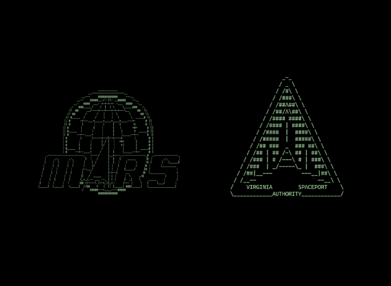
Personal Projects
Check out my GitHub »
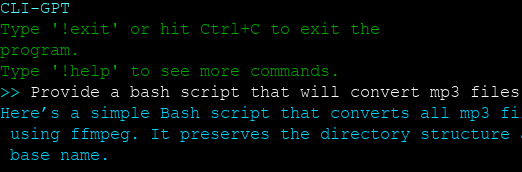
CLI-GPT
CLI-GPT is a command line interface frontend for prompting with OpenAI's API. I developed so I could use OpenAI calls on my headless FreeBSD system and for use on any future headless servers where I may need to ask a quick question.
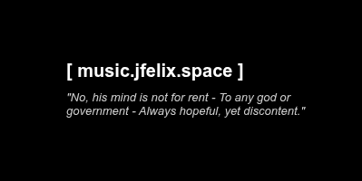
music.jfelix.space
An audiovisualized interface for tuning in to various college radio stations. Uses the UI I made for radio.jfelix.space, and uploaded October 3rd; national college radio day.
GAOL
A multiplayer AI storyteller using a RAG system to generate highly dynamic and persistent adventures.
Uses the Gemini API and a complex RAG and prompting system handled by a backend Flask API.
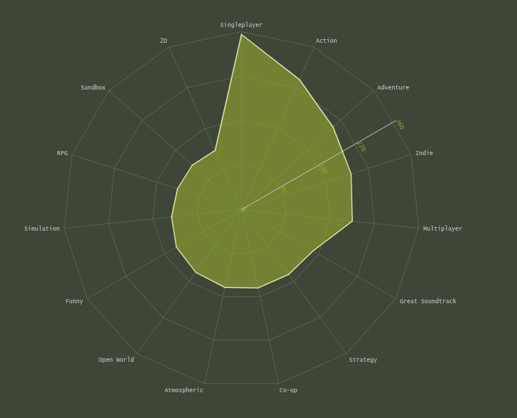
OpenValve [2.0]
Developed alongside Trevor Corcoran
A steam games database, data visualizer, and SteamAPI frontend. Database is pulled from Kaggle.
Derived from a group project done for a university database class. Frontend design is emulatory of the original, military-green Steam UI.
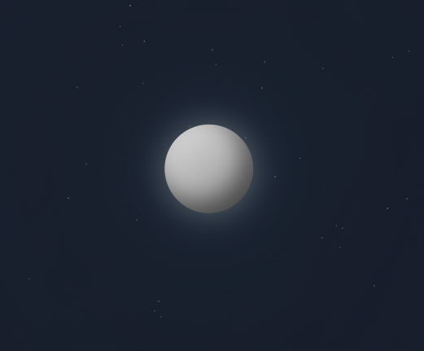
Orbit Sound System Webapp
A webapp for generating tunes using text inputs with a backend for publishing systems. Uses the Web Audio API for note generation. CSS & styling was mostly done with AI.
Audio API is laid out as such:
- Oscillator Node: Make a note sound
- Gain Node: Control the volume of the note sound
- Master Gain Node: Control the overall volume of the site.
- Compressor Node: Gate the max volume
- Output: Play to user
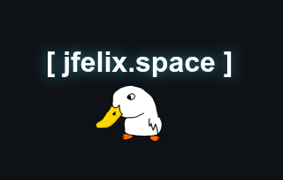
jfelix.space
This website and domain.
Running off an Oracle Cloud VM on Rocky 9. jfelix.space is also the host of several of my other webpages and web applications, which can be viewed at the Torii » page.
While this particular site is hosted on Oracle Cloud, all my other services are self-hosted from a set of devices at my house. The services are divied up between a Raspberry Pi and an old Dell laptop both running Ubuntu servers.
I use Cloudflare tunnels, NGINX proxying, and CNAME records to create a secure network for accessing all my subdomains.
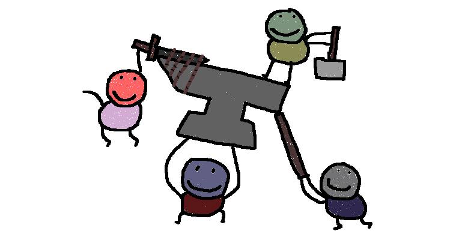
Doodle Brawl
Created for VCU's 2026 24hr Hackathon with Trevor Corcoran & Connor Fair.
Draw a fighter and watch them compete in the Doodle Brawl Arena. AI (Gemini API) is used to evaluate, assign stats, and play out every match.
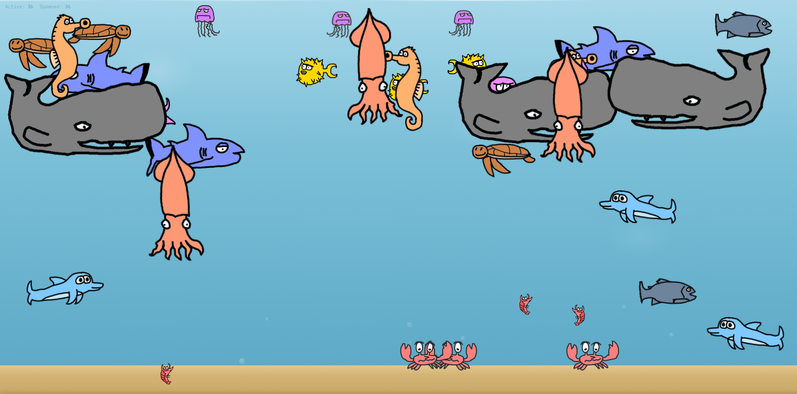
fish.jfelix.space
A fishtank website used for a demo / workshop I ran on APIs. Using Go on the backend. Got some experience with backend rate-limiting after a few attendees decided to script the API calls (lol).
Accepts POST requests and GET requests so workshop attendees could get some experience running API calls. Assets drawn by me, if you couldn't tell.
The Perpetual Music Machine
An all-in-one software for hosting, managing, and broadcasting your own online radio.
Ideally the software will be able to deploy and/or configure both the Icecast server and Liquidsoap generation while also maintaining playlist sync to outside sources for easy setlist management.
Academic Projects
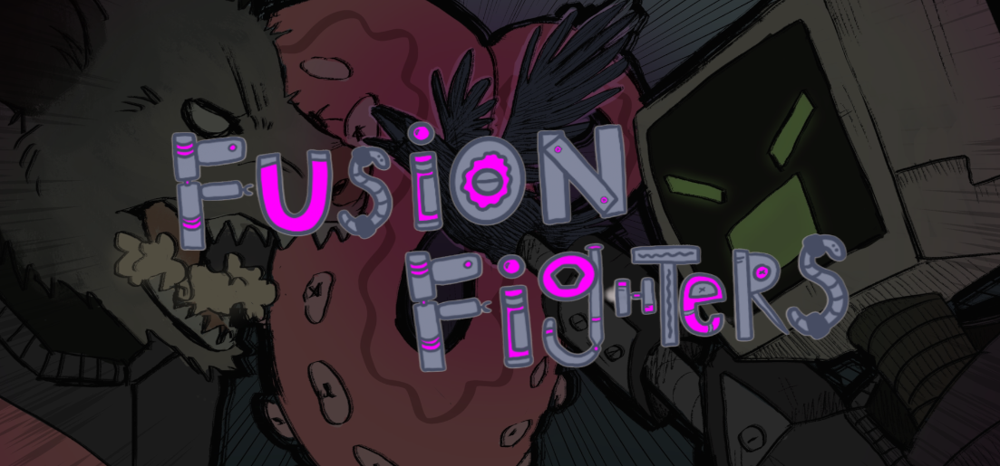
Fusion Fighters - GameDev
1v1 fighting game where you modify your character with unlockable body parts. Every part is different, and some synergize better with others.
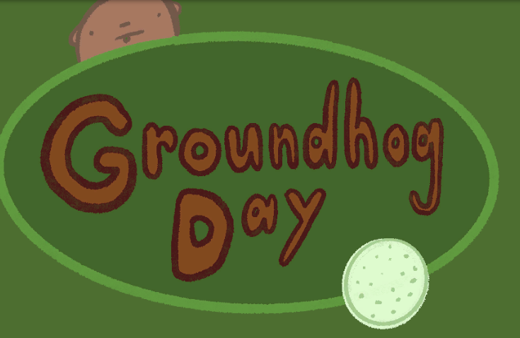
Groundhog Day - GameDev
A silly physics sandbox game. Originally intended as a 2d Human: Fall Flat with the working title Human: Is Flat. It was transformed into a cute, lighthearted puzzle sandbox with the assets created by Sage Laine.
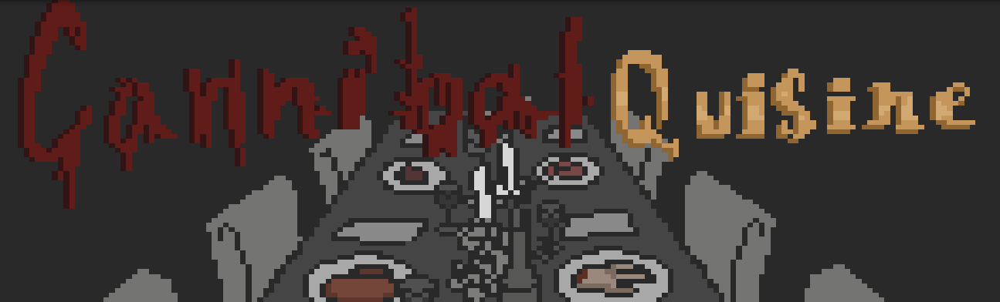
Cannibal Quisine - GameDev
A parodical cooking game where you cook and serve rather... unique cuisine. Taking inspiration from Papas Pizzeria style games. Concept and assets were done by Chelsea Hodum.
OpenValve - Databases
OpenValve is a data collection project built for a database class.
The goal was to create a system for generating game recommendations based on overlapping game tags from a user's library using SteamWorks API calls.
RamRanch - VCU Hackathon
2nd Place Winner
A habit tracking gamification project built during a 5-hour mini-hackathon.
We developed a prototype of the ranch system with several rams, where their needs are to be tied to your general upkeep.
Prescription Effect Logging - Software Engineering
We designed a logging application that takes daily inputs from a user based on their perceived effects of a prescriptions, logs them, then allows the user to visualize the data.